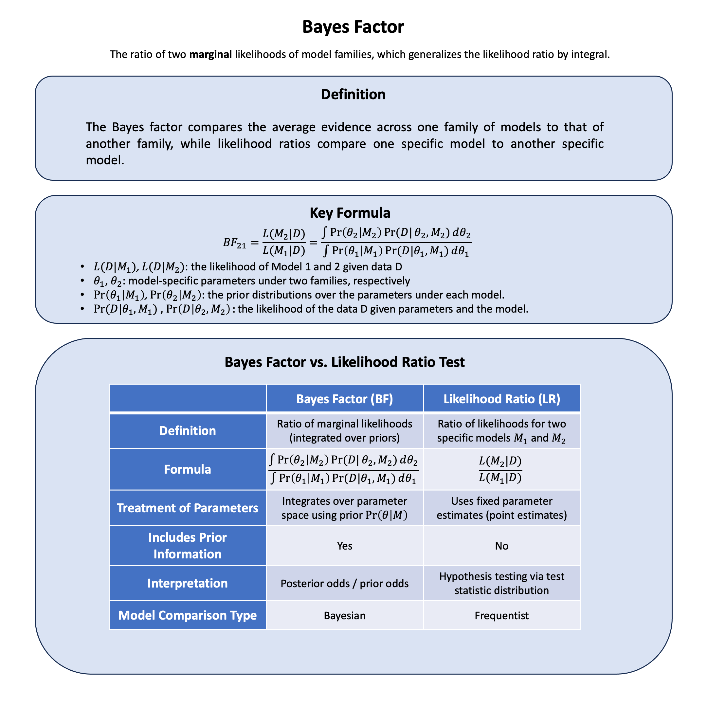

Bayes Factor#
The Bayes factor is the ratio of two marginal likelihoods; that is, the likelihoods of two statistical models integrated over the prior probabilities of their parameters.
Graphical Summary#

Key Formula#
Given a model selection problem in which one wishes to choose between two models on the basis of observed data \(\text{D}\), the plausibility of the two different models \(\text{M}_1\) and \(\text{M}_2\), parametrised by model parameter vectors \(\theta_1\) and \(\theta_2\), is assessed by the Bayes factor \(\text{BF}\) given by: $\( \text{BF}_{21} = \frac{L(\text{M}_2|\text{D})}{L(\text{M}_1|\text{D})} ={\frac {\int \Pr(\theta_{2}|M_{2})\Pr(D|\theta_{2},M_{2})\,d\theta _{2}}{\int \Pr(\theta_{1}|M_{1})\Pr(D|\theta_{1},M_{1})\,d\theta _{1}}} \)$
Technical Details#
If instead of the Bayes factor integral, the likelihood corresponding to the maximum likelihood estimate (MLE) of the parameter for each statistical model is used, then the test becomes a classical likelihood-ratio test. The likelihood at the MLE is just a point estimate of the Bayes factor numerator and denominator, respectively.
Unlike a likelihood-ratio test (LRT), this Bayesian model comparison does not depend on any single set of parameters, as it integrates over all parameters in each model (with respect to the respective priors).
Therefore, likelihood ratio can be considered as a special case of Bayesian analysis with a contrived prior that’s hard to get at.
An advantage of the use of Bayes factors is that it automatically, and quite naturally, includes a penalty for including too much model structure. It thus guards against overfitting. For models where an explicit version of the likelihood is not available or too costly to evaluate numerically, approximate Bayesian computation can be used for model selection in a Bayesian framework, with the caveat that approximate-Bayesian estimates of Bayes factors are often biased.
Example#
We will use the same genetic example from the likelihood, and recall the concepts of MLE as we did in Example 2 in maximum likelihood estimation. The new thing in this notebook is that we will use Bayes factors to compare composite models:
Model 2 or 3: either a moderate or strong effect
Model 4: the best-fitting effect from MLE that we derived in maximum likelihood estimation
This shows how Bayes factors extend likelihood analysis from comparing separate models (i.e., likelihood ratio) to weighing evidence for complex scientific theories.
Model Setup#
# Clear the environment
rm(list = ls())
set.seed(19) # For reproducibility
# Generate genotype data for 5 individuals at 1 variant
N <- 5
genotypes <- c("CC", "CT", "TT", "CT", "CC") # Individual genotypes
names(genotypes) <- paste("Individual", 1:N)
# Define alternative allele
alt_allele <- "T"
# Convert to additive genotype coding (count of alternative alleles)
Xraw_additive <- numeric(N)
for (i in 1:N) {
alleles <- strsplit(genotypes[i], "")[[1]]
Xraw_additive[i] <- sum(alleles == alt_allele)
}
names(Xraw_additive) <- names(genotypes)
# Standardize genotypes
X <- scale(Xraw_additive, center = TRUE, scale = TRUE)[,1]
# Set true beta and generate phenotype data
true_beta <- 0.4
true_sd <- 1.0
# Generate phenotype with true effect
Y <- X * true_beta + rnorm(N, 0, true_sd)
Compute Likelihood and Log-likelihood#
Now, let’s create two functions to compute the likelihood and log-likelihood under different models (in this case, different βs) for the effect of a genetic variant on the phenotype:
# Likelihood function for normal distribution
likelihood <- function(beta, sd, X, Y) {
# Calculate expected values under the model
mu <- X * beta
# Calculate likelihood (product of normal densities)
prod(dnorm(Y, mean = mu, sd = sd, log = FALSE))
}
# Log-likelihood function (more numerically stable)
log_likelihood <- function(beta, sd, X, Y) {
# Calculate expected values under the model
mu <- X * beta
# Calculate log-likelihood (sum of log normal densities)
sum(dnorm(Y, mean = mu, sd = sd, log = TRUE))
}
# Test three different models with different beta values
beta_values <- c(0, 0.5, 1.0) # Three different effect sizes to test
model_names <- paste0("Model ", 1:3, " (beta = ", beta_values, ")")
# Calculate likelihoods and log-likelihoods
results <- data.frame(
Model = model_names,
Beta = beta_values,
Likelihood = numeric(3),
Log_Likelihood = numeric(3)
)
for (i in 1:3) {
results$Likelihood[i] <- likelihood(beta = beta_values[i], sd = true_sd, X = X, Y = Y)
results$Log_Likelihood[i] <- log_likelihood(beta = beta_values[i], sd = true_sd, X = X, Y = Y)
}
print("Likelihood and Log-Likelihood Results:")
results
[1] "Likelihood and Log-Likelihood Results:"
| Model | Beta | Likelihood | Log_Likelihood |
|---|---|---|---|
| <chr> | <dbl> | <dbl> | <dbl> |
| Model 1 (beta = 0) | 0.0 | 0.0019210299 | -6.254894 |
| Model 2 (beta = 0.5) | 0.5 | 0.0021961524 | -6.121048 |
| Model 3 (beta = 1) | 1.0 | 0.0009236263 | -6.987203 |
Maximum Likelihood Estimation#
# Find the MLE by optimizing the log-likelihood function
mle_result <- optimize(log_likelihood,
interval = c(-2, 2), # Search range for beta
maximum = TRUE, # We want to maximize
sd = true_sd,
X = X,
Y = Y)
beta_mle <- mle_result$maximum
log_lik_mle <- mle_result$objective
cat("Maximum Likelihood Estimate (MLE):\n")
cat("Beta_MLE =", round(beta_mle, 4), "\n")
cat("Log-likelihood at MLE =", round(log_lik_mle, 4), "")
# Compare MLE to Model 1 (beta = 0)
beta_null <- 0
log_lik_null <- log_likelihood(beta = beta_null, sd = true_sd, X = X, Y = Y)
lik_null <- likelihood(beta = beta_null, sd = true_sd, X = X, Y = Y)
lik_mle <- likelihood(beta = beta_mle, sd = true_sd, X = X, Y = Y)
# Calculate likelihood ratio: MLE vs Null model
lr_mle_vs_null <- lik_mle / lik_null
log_lr_mle_vs_null <- log_lik_mle - log_lik_null
Maximum Likelihood Estimate (MLE):
Beta_MLE = 0.3169
Log-likelihood at MLE = -6.054
MLE gives a point estimate and we append it to the results table:
new_row = nrow(results)+1
results[new_row, ] <- NA
results$Model[new_row] <- paste0("Model ", new_row, "(beta = ", round(beta_mle, 3), ")")
results$Beta[new_row] <- beta_mle
results$Likelihood[new_row] <- lik_mle
results$Log_Likelihood[new_row] <- log_lik_mle
results
| Model | Beta | Likelihood | Log_Likelihood | |
|---|---|---|---|---|
| <chr> | <dbl> | <dbl> | <dbl> | |
| 1 | Model 1 (beta = 0) | 0.0000000 | 0.0019210299 | -6.254894 |
| 2 | Model 2 (beta = 0.5) | 0.5000000 | 0.0021961524 | -6.121048 |
| 3 | Model 3 (beta = 1) | 1.0000000 | 0.0009236263 | -6.987203 |
| 4 | Model 4(beta = 0.317) | 0.3169227 | 0.0023484170 | -6.054014 |
Bayes Factor#
Now let’s calculate Bayes factors by assigning prior probabilities to our models. Let’s try to answer the question, is the plausibility of Model 2 and 3 together more than MLE?
# Define priors for Models 2 and 3 (equal weights)
prior_2 <- 0.5 # P(Model 2)
prior_3 <- 0.5 # P(Model 3)
# Calculate weighted likelihood for combined "non-null" hypothesis
# P(Data | H_alt) = P(Data | Model 2) × P(Model 2) + P(Data | Model 3) × P(Model 3)
likelihood_2 <- results$Likelihood[2] # beta = 0.5
likelihood_3 <- results$Likelihood[3] # beta = 1.0
likelihood_1 <- results$Likelihood[1] # beta = 0
# Marginal likelihood under Model 2 + Model 3 (weighted average)
marginal_lik_23 <- likelihood_2 * prior_2 + likelihood_3 * prior_3
Then the Bayes factor is:
bf_23_vs_mle <- marginal_lik_23 / results$Likelihood[4]
bf_23_vs_mle
The Bayes factor of 0.66 indicates that the MLE model has stronger evidence than the combined Models 2+3 hypothesis. In other words, the data supports the precise MLE estimate (\(\beta \approx 0.4\)) about 1.5 times more than the composite hypothesis that the effect is either moderate (\(\beta \approx 0.5\)) or strong (\(\beta \approx 1.0\)). This makes intuitive sense because the MLE estimate is closer to the true value (\(\beta = 0.4\)) than either of the fixed alternatives, demonstrating how the flexibility of MLE can outperform pre-specified model choices when the true parameter falls between them.